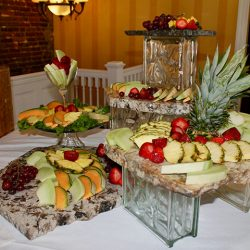

Wildflower Restaurant
The Wild Flower Restaurant & Catering was created in 1995 by owner, Tracy Czarnec. Her vision was to bring together American gourmet dining with a casual atmosphere. The decision to open in the Central West End seemed natural. A trendy area with a cosmopolitan feel, the West End turned out to be the perfect place for the Wild Flower and diners looking for more than just another restaurant.